The Fabric Is
Where It All Begins
Before the first stitch, there is the fabric — the soul of every garment. At Thread & Form, we source fabrics from established textile mills across India, selecting only materials that meet our standards for texture, durability and drape.
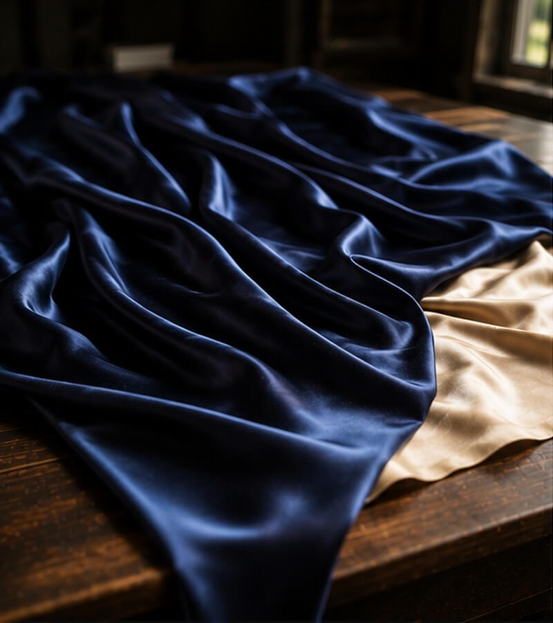
Mulberry Silk
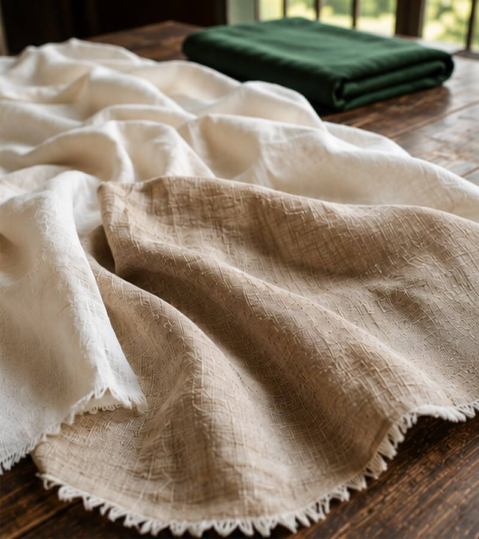
Organic Cotton & Linen
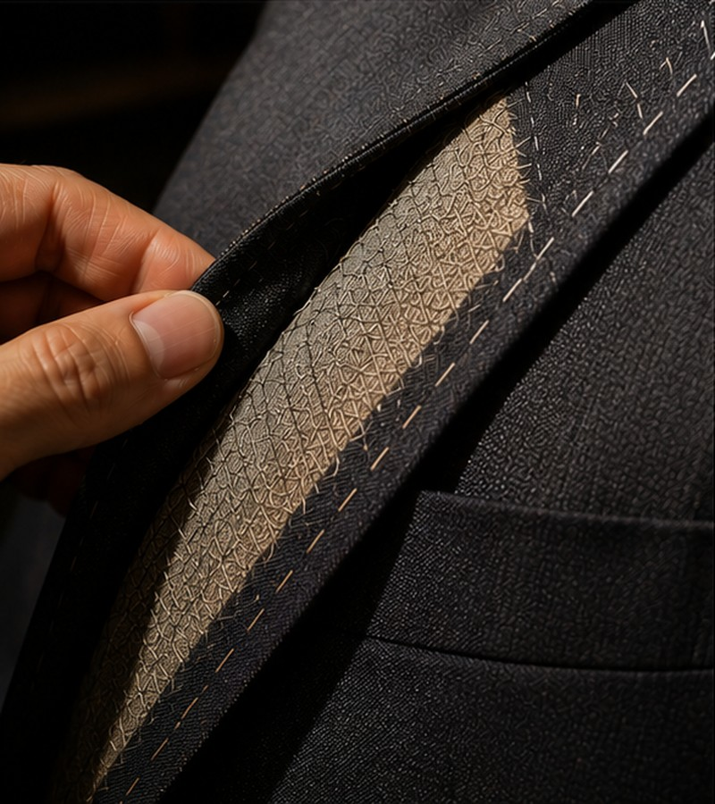
Merino Wool 120s
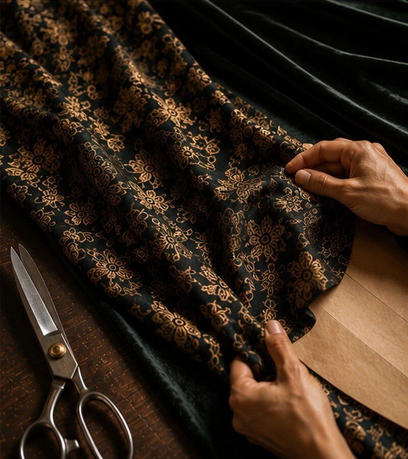
Royal Brocades
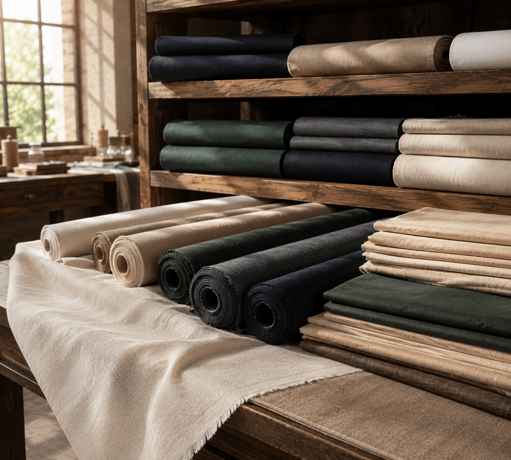
Pure & Breathable
Cotton
Our cotton range includes fine Egyptian long-staple, soft Cambric, structured poplin, and lightweight voile. Ideal for everyday blouses, kurtas, shirts, and summer dresses — cotton offers unmatched comfort in warm climates.
Textured & Effortless
Linen
Pure Irish and Belgian linen offer a distinctive natural texture, beautiful drape, and remarkable breathability. Linen grows more beautiful with wear — developing a soft, relaxed character that becomes part of the garment's story.
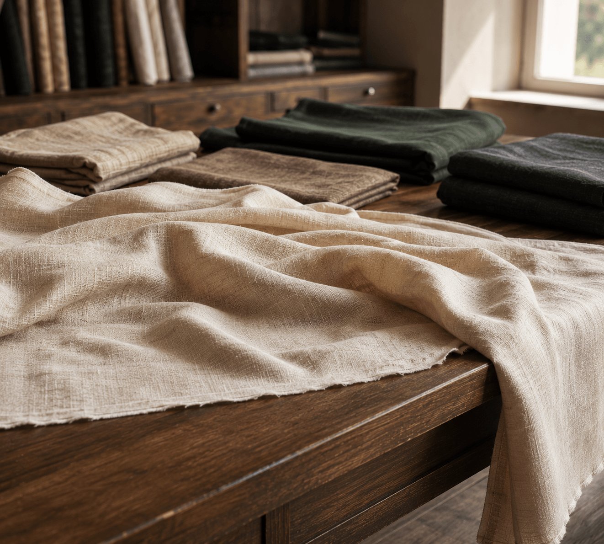
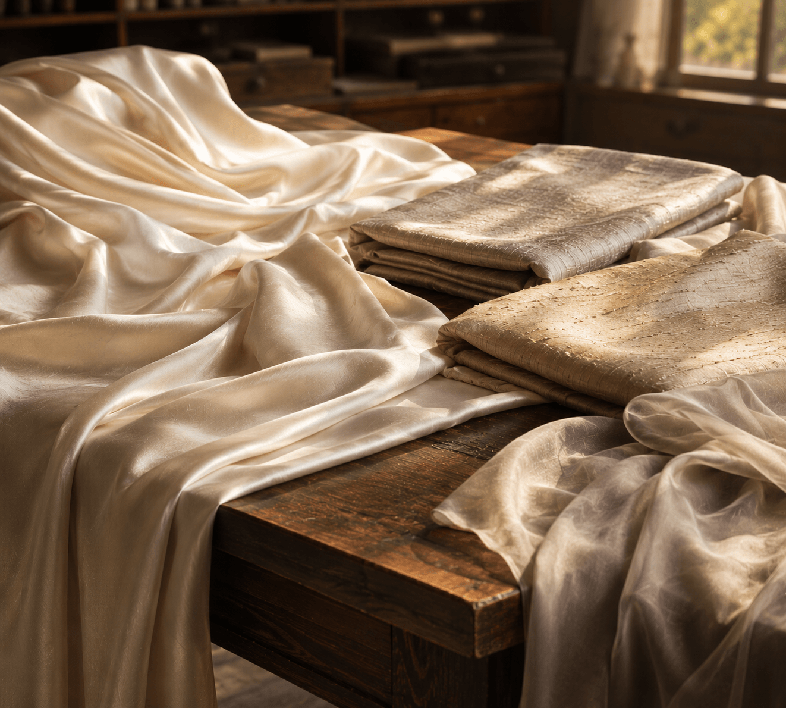
Luminous & Refined
Silk
Our silk collection includes Mulberry silk, Dupioni, raw silk, and georgette. Silk requires skilled hands to stitch well — and our tailors have decades of experience working with its unique drape and weight. The result is extraordinary.
Structured & Warm
Fine Wool
From featherweight Super 100s suiting wool to robust tweed and flannel, our wool selection is curated for Indian tailoring conditions. Wool breathes better than polyester, ages beautifully, and is the natural choice for any formal garment intended to last.
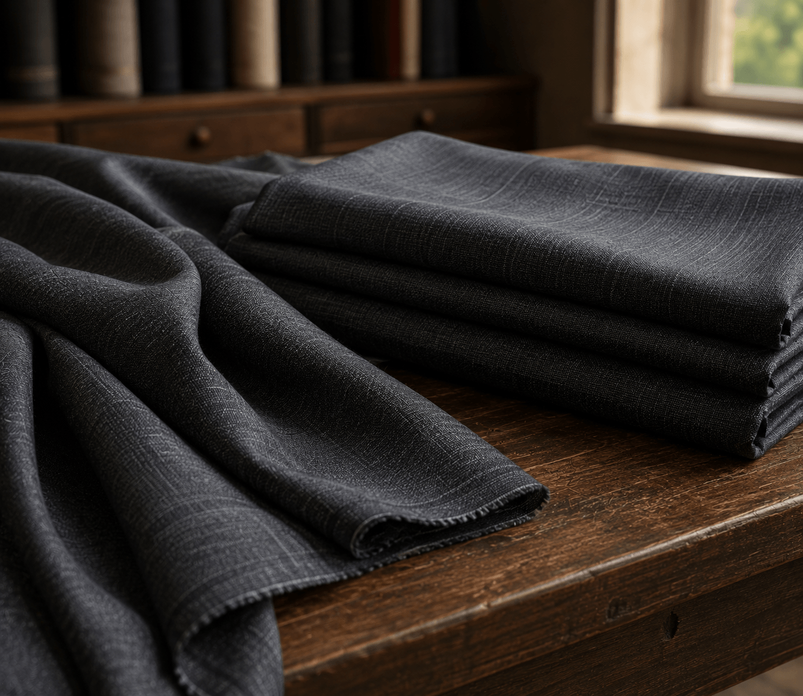

Italian & Domestic
Suiting Fabrics
Our suiting range includes Italian wool-blend suitings, tropical wools for warm climates, structured cottons, and poly-viscose blends. We advise you on which fabric best suits your occasion, climate, and desired aesthetic.
For Your Most
Important Moments
Chiffon, organza, velvet, brocade, banarasi, and embellished fabrics for weddings, festivals, and special occasions.
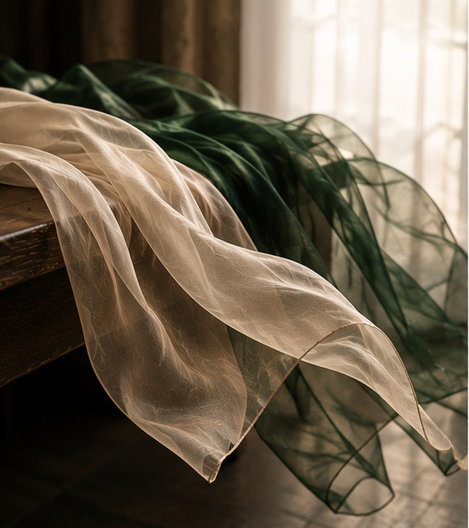
Chiffon & Georgette
Sheer, lightweight fabrics with fluid drape — ideal for dupattas, sheer overlays, and flowing reception gowns.
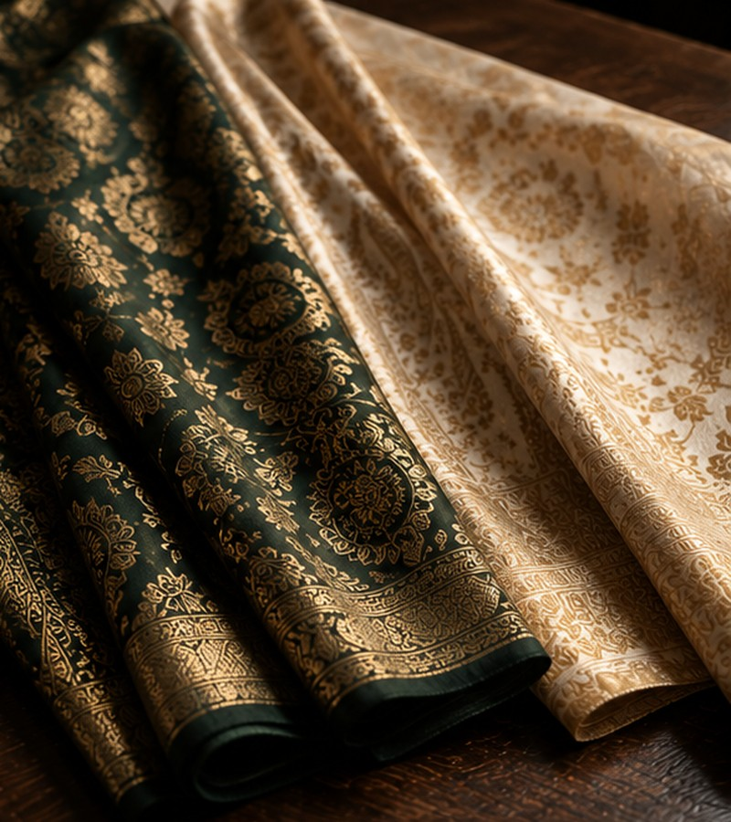
Brocade & Banarasi
Rich, woven fabrics with metallic zari or silk thread patterns. Ideal for blouses, lehengas, and festive kurtas.
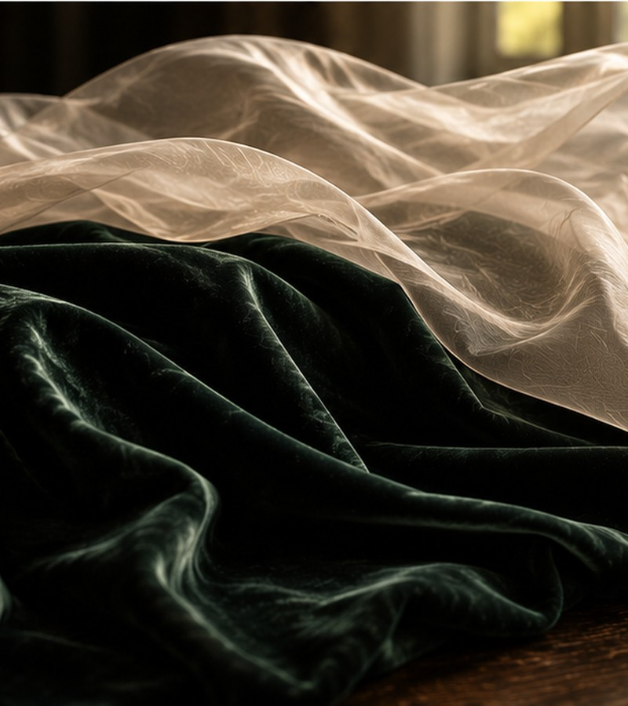
Velvet & Organza
Plush velvet for structured eveningwear, and crisp organza for sheer overlays and flared lehenga volumes.
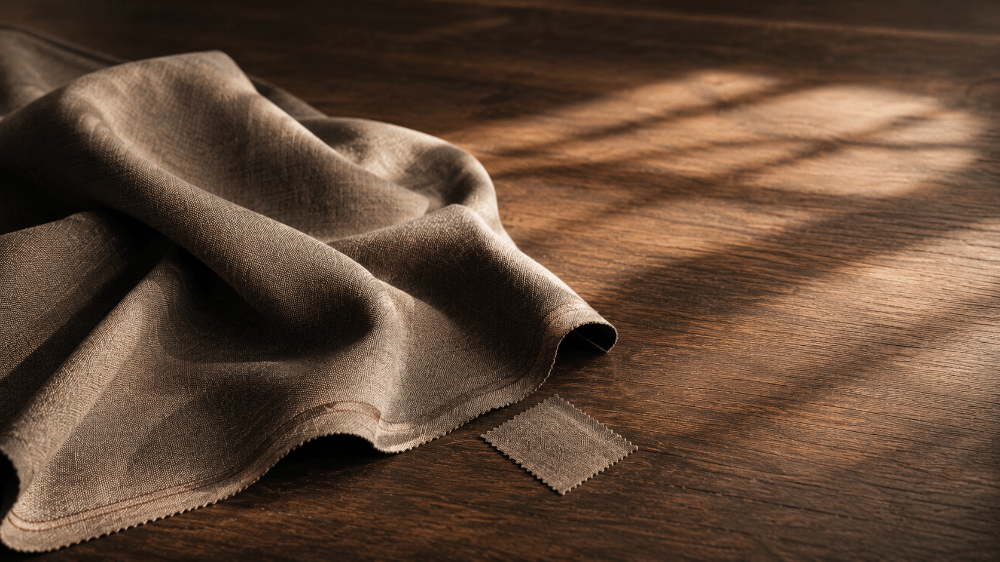
Not Sure Which
Fabric to Choose?
Let our fabric specialist guide you. Bring your garment idea and we'll recommend the perfect fabric for your body type, occasion, and climate.